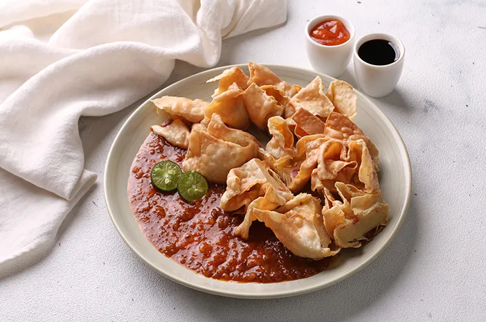

One of the most famous snacks in Indonesia is batagor, a fried fish dumpling served in a traditional spicy sauce. It has roots in the Chinese culinary tradition, which has left a trace on many Indonesian dishes. Although this famous snack is reminiscent of the more famous Chinese dumpling, its distinguishable characteristic is that it is fried, not steamed. The most common fish used to make the dish is wahoo, but tuna, mackerel, and prawns can also be used. Potatoes, tofu, or cabbage are also occasionally added to the dish. Batagor is the perfect snack because of the way it is served. When fried, the dumplings are cut into small bite-sized pieces and covered in peanut, soy, and chili sauce with a splash of lime juice.
Meal prep time : 35 minutes
Servings : 8